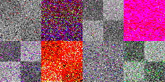
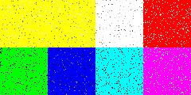

|
epgpu version 0.99
Designed and Developed by: |


Introduction
-
epgpu performs Evolutionary Programming on GPU. Evolutionary Algorithms (EAs) are effective and robust methods for solving many practical problems such as feature selection, electrical circuit synthesis, and data mining. However, they may execute for a long time for some difficult problems, because several fitness evaluations must be performed. We implement a parallel EA on consumer-level graphics cards. Our approach shows the success of using GPU to perform evolutionary computation, and giving a promising parallel solution. We also show that there is not feasible to generate high quality random number on GPU for scientific computation due to the pseudo-integer modulation operators, and short repetition period.This software is free for both non-commercial usage and commercial usages, registration (free of charge) is required. Please give us an email for registration and download request. We will send you the source code once we grant your request.
System Requirement
- Hardware: Pentium III or above, 128MB RAM, Nvidia GeForce 6 series graphics
card
- OS: Windows 98/NT/2000/XP, with OpenGL
License Agreement
Our program is basically a free software. The only requirement is as follow: once you have received our program, you are agreed to cite our official paper below in your publications/work that based on our software.
Installation Instruction
- Unzip the epgpu-0.99.zip into a subdirectory, say epgpu
- Simply run ep.exe with the argument setting stated in the README.txt
- A window will pop up to visualize the convergence. When you see the clear B/W checkerboard, the population converges. The clearer the B/W checker pattern is, the more accurate the solution is.
Why Current GPU Is No Good for High-Quality Random Numbers Generation?
For evolutionary computing, the quality of random numbers is extremely important for generating accurate solution. Serious research requires high-quality random numbers with very long repeating period.Due to the lack of high-precision integer and bitwise operations, we would like to point out that current GPUs cannot generate high-quality random numbers because we cannot use large prime numbers in shader program. Although our current program supports GPU-based random number generation, we don't recommend it for serious evolutionary computing research. We highly recommend users to use the software-based random number generator. Even such software-based random numbers are used, we still get significant speed-up thank to the GPU parallelization of other operators.
To demonstrate how the solution accuracy is affected by the quality of random number, we compare the results of GPU-based and software-based random number generations. The faster the population converges to the B/W checkboard pattern (below), the higher the quality of random number is. From the following screenshots, it can be shown that the quality of random numbers significantly affects the accuracy. In fact, the population computed with the GPU-generated random numbers will not converge to the optimal values as the one with high-quality random numbers. Therefore, in our work, we do not use GPU for speeding up the random number generation, because we pay particular attention to the accuracy of result.
|  |
|  |
Related Publications
-
(submitted 2004; revised April 2005; accepted July 2005)
-